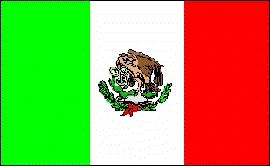
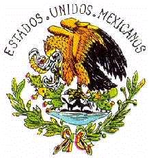

México
|  |  |
Información General
Nombre oficial: Estados Unidos Mexicanos
Área: 1 953 162 km²
Costas: 11 952,7 km
División política: 31 Estados y el Distrito Federal
Estado Capital
- Aguascalientes Aguascalientes
- Baja California Mexicali
- Baja California Sur La Paz
- Campeche Campeche
- Coahuila Saltillo
- Colima Colima
- Chiapas Tuxtla Gutiérrez
- Chihuahua Chihuahua
- Durango Durango
- Guanajuato Guanajuato
- Guerrero Chilpancingo
- Hidalgo Pachuca
- Jalisco Guadalajara
- México Toluca
- Michoacán Morelia
- Morelos Cuernavaca
- Nayarit Tepic
- Nuevo León Monterrey
- Oaxaca Oaxaca
- Puebla Puebla
- Querétaro Querétaro
- Quintana Roo Chetumal
- S. Luis Potosí S. Luis Potosí
- Sinaloa Culiacán
- Sonora Hermosillo
- Tabasco Villahermosa
- Tamaulipas Ciudad Victoria
- Tlaxcala Tlaxcala
- Veracruz Jalapa
- Yucatán Mérida
- Zacatecas Zacatecas
Unidad monetaria: Peso
1 Peso = 100 centavos
Idiomas: Español (oficial). Se hablan, además, sesenta y seis lenguas indígenas, entre ellas náhuatl, maya, zapoteco, mixteco, tzeltal, otomí, tzotzil, totonaca, mazateco, mazahua, chol, huasteco y chinanteco
Fiesta nacional: 16 de septiembre, Día de la Independencia
Gentilicio: Mexicano
Hora oficial: GMT Campeche, Quintana Roo, Yucatán -6 horas (normal), -5 (verano); Sonora, Sinaloa, Nayarit, Baja California Sur -7 (normal/verano); Baja California Norte -8 (normal), -7 (verano), otros estados -6 (normal/verano)
Miembro de: ONU, OEA, ALADI, SELA, TLC, OCDE
Curiosidades
México es después de Brasil el segundo país en población de América Latina.
Formalmente a México se le agrupa en América del Norte, en realidad constituye un puente entre esta región y América Central y el Caribe.
El centro de la capital mexicana ha descendido unos 7,5mm en los últimos cien años debido al agotamiento del manto acuífero sobre el que descansa.
La historia prehispánica de México presenta características singulares dentro de América Latina. Cuando muchas de las naciones europeas eran sólo provincias del Imperio romano, ya existían en México civilizaciones importantes.
Tenochtitlán fue en su tiempo (1329) la ciudad más grande del mundo. En la época en que Londres no tenía más de 45 000 habitantes, en Tenochtitlán vivían medio millón de personas. La plaza comercial de Tenochtitlán funcionaba diariamente y se estima que concurrían a ella unos 20 000 comerciantes.
En la plaza de Tenochtitlán se vendió por primera vez en el mundo la nieve de sabores, con el hielo traído de los volcanes.
Los toltecas una civilización que se desarrolló en el valle de México adoraban a Quetzalcoatl, cuyo nombre significa "inteligencia divina" y que se supone fue venerada antes por los olmecas. Sobre la figura de Quetzalcoatl se han tejido diversas leyendas, hasta atribuirle un origen extraterrestre.
Información adicional en Internet.
Perfil
Ecónomico
Perfil Demográfico
Fuente: http://www.inegi.gob.mx/
Perfil Cultural
Alfabetismo: 91 %
Religión:
- Católicos: 89,7%
- Protestantes: 4,90%
- No religiosos : 3,20%
- Otros: 2,20%.
Algunas figuras notables:
- Mario Moreno (Cantinflas) (1911-1993). Actor
- Carlos Chávez (1899-1978). Compositor
- Agustín Lara (1900-1970). Compositor
- Mario Molina. Premio Nobel de Química
- Amado Nervo (1870-1919). Poeta
- José Clemente Orozco (1883-1949). Pintor
- Octavio Paz (1914-1998). Poeta, escritor, ensayista y crítico literario. Premio Nobel de Literatura en 1990.
- Manuel M. Ponce (1882-1948).Compositor
- Alfonso Reyes (1889-1959). Historiador, ensayista y poeta
- Diego Rivera (1886-1957). Pintor
- David Alfaro Siqueiros (1896-1974).Pintor
Lugares declarados patrimonio mundial por la UNESCO
- El Tajín (Ciudad prehispánica)
- México (Centro histórico y Xochimilco)
- Puebla (Centro histórico)
- Teotihuacán (Ciudad prehispánica)
- Palenque (Ciudad prehispánica y Parque Nacional)
- Sian Ka'an (Reserva de la Biosfera)
- Chichén Itzá (Ciudad prehispánica)
- Guanajuato (Ciudad histórica y minas adyacentes)
- Monte Albán (Sitio arqueológico)
- Oaxaca (Zona histórica)
- Morelia (Centro histórico)
- Pinturas rupestres de la Sierra de San Francisco
- Zacatecas (Centro histórico)
- Santuario de ballenas de El Vizcaíno
- Primeros monasterios del siglo XVI sobre las laderas del Popocatépetl
Sistema de Gobierno
Constitución vigente: 5 de febrero de 1917
Sistema ejecutivo: Presidente (elegido por sufragio universal para desempeñar el cargo por un período de seis años, no reelegible), diecisiete Secretarios de Estado, el Jefe del Departamento del Distrito Federal, el Procurador General y agencias autónomas.
Sistema legislativo: Congreso compuesto de dos cámaras: de Diputados (500 miembros elegidos para un término de tres años, 300 por mayoría simple y 200 divididos proporcionalmente entre los partidos que no obtengan representantes por mayoría simple y por lo menos, el 1,5% de la votación) y Senado (sesenta y cuatro miembros, dos elegidos por un término de seis años por cada estado y el Distrito Federal). Los senadores y diputados no son reelegibles en períodos consecutivos.
Sistema judicial: Corte Suprema (veintiún miembros, nombrados por el Ejecutivo y ratificados por el Senado), cortes de circuito y cortes de distrito.
Gobierno subdivisional: En los Estados, el Ejecutivo lo ejerce el Gobernador, el Legislativo, la Cámara de Diputados y el Judicial, el tribunal Supremo de Justicia del estado (hay 2 378 municipios). El jefe (regente) del Departamento del Distrito Federal es nombrado por el Presidente de la República, pero a instancias de los ciudadanos se busca su primer nombramiento por elección popular. El primer paso fue la elección de la Asamblea Legislativa del D.F..
Aproximación histórica
Al sur del Río Grande, en el extremo Sur de América del Norte, se encuentra México.
Poblado desde unos 8 000 a 10 000 años antes de Cristo, en el territorio actual de México florecieron algunas de las civilizaciones más importantes de la América Antigua: otomí, olmeca, tolteca, teotihuacanos y los aztecas o mexicas.
En los primeros años de la era cristiana aparece una civilización de la que se conservan figuras de barro y que se conoce como cultura otomí y de los que se encuentran huellas en los estados de México, Puebla y en la propia Ciudad de México. Es posible que esta civilización descendiera de los maya-quiché que también poblaron el territorio mexicano. Hay también hallazgos sobre la presencia de mixtecas y zapotecas, así como de los tlaxcaltecas y tarascos.
La otra civilización importante, para muchos estudiosos, una "cultura madre", es la de los olmecas y muchos de sus rasgos fueron incorporados a las culturas tolteca, teotihuacana y azteca. Los toltecas eran un pueblo pacífico que alcanzó un elevado nivel cultural. Adoraban a Quetzalcoatl
En el siglo III se desarrolló la cultura de Teotihuacán que desapareció cuatro siglos antes de que floreciera la cultura azteca. La Pirámide del Sol, construida del siglo I al III, es la mayor pirámide del continente americano.
En Yucatán y otras regiones han quedado muestras de la cultura maya, como en Uxmal, al sur de México.
Uno de los grandes imperios y civilizaciones del continente americano son los mexicas, aztecas o anahuacas. Los aztecas se establecieron en el valle de México y fundaron su capital Tenochtitlán en 1329. El imperio azteca se extendió de México hasta Nicaragua (Nican ca anahuac, que significa hasta aquí llega Anahuac). La ciudad de Tenochtitlán llegó a tener medio millón de habitantes. Los aztecas desarrollaron una arquitectura monumental con gran desarrollo científico y una ingeniería hidráulica que les permitió trasladar el agua por diques y canales. Construyeron la ciudad sobre pilotes y tuvieron un jardín botánico y un zoológico. Los mexicas llegaron a intercambiar representantes con los incas.
El imperio azteca estaba en su máximo esplendor cuando Hernán Cortes, con 600 hombres desembarcó en tierra mexicana en 1519 y fundó la ciudad de Veracruz. Moctezuma II, desde la ciudad imperial de Tenochtitlán, construida sobre una isla del lago de Texcoco, en el alto valle de México, reinaba sobre un vasto territorio que abrigaba a varios millones de habitantes.
El que los españoles lograran conquistar a este imperio se debió a varios factores, fundamentalmente a que lograron el apoyo de otros pueblos sometidos por los aztecas.
Producida la conquista del imperio azteca, España creó en 1535 el Virreinato de Nueva España, uno de los más importantes de América, por sus grandes riquezas.
En 1810, estalló en México el primer movimiento revolucionario encabezado por el cura Hidalgo, el que fue seguido luego de su fracaso, por el cura Morelos, ambos fueron fusilados y la rebelión sofocada.
En 1821 México se declara monarquía constitucional independiente y en 1822 se proclama emperador Agustín de Iturbide que es derrocado por el movimiento revolucionario dirigido por el General Santa Ana, estableciéndose la República en 1824. Durante este período México se ve envuelta en una guerra con los Estados Unidos de Norteamérica y pierde gran parte de sus territorios. Combatido por los liberales, Santa Ana es sucedido por Benito Juárez. En 1861 franceses, ingleses y españoles invaden el país. Los franceses permanecen y coronan al Archiduque austríaco, Maximiliano de Habsburgo, emperador de México. Juárez dirigi la resistencia y en 1867 la monarquía es derrocada.
México surge como estado moderno durante la dictadura del general Porfirio Díaz de 1877 a 1911. Este régimen inserta a México en la economía mundial como exportador de productos agrícolas y minerales, pero margina a las clases medias y a los campesinos.
En 1910 se inicia la Revolución Mexicana, la primera revolución popular del siglo XX, con líderes destacados como Emiliano Zapata, Pancho Villa y Venustiano Carranza. En 1915 Carranza domina casi todo México. Zapata es asesinado en 1919, Pancho Villa abandona la lucha y es asesinado tres años más tarde.
El general Lázaro Cárdenas, presidente entre 1934 y 1940 prosigue el movimiento revolucionario y sienta las bases del régimen político mexicano.
El territorio mexicano presenta dos cadenas montañosas: la Sierra Madre Occidental, paralela al Pacífico y la Oriental, con valles altiplanicies y mesetas entre la dos.
México es productor de petróleo y plata. Cuenta con industria automovilística, siderúrgica, del petróleo, química, textil, alimenticia, de bebidas y del papel.
Su capital es una de las ciudades más pobladas del planeta, con más de 15 millones de habitantes en toda su zona urbana y uno de los centros culturales más importantes del mundo.
«-- ir al comienzo
«-- regresar